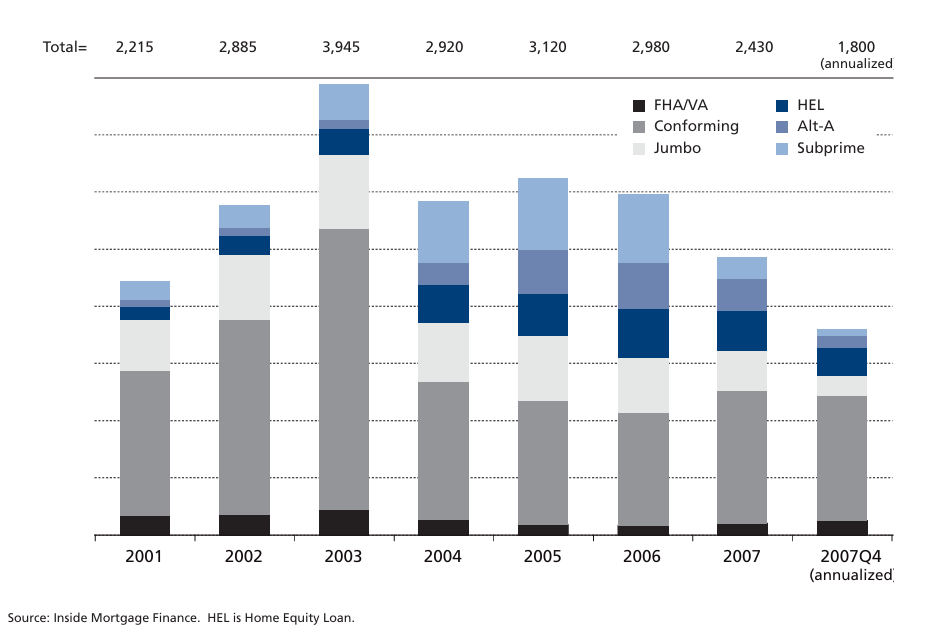

Finanskrisens udvikling og eftervirkninger
Fra boligboom til regulering — mekanismer, cases og læring
Introduktion
Læringsmål
- Forklare hovedforløbet før, under og efter finanskrisen samt de centrale mekanismer bag
- Beskrive udviklingen i lånemarkedet (prime → subprime/Alt-A/HEL) og forstå logikken bag høj LTV og risikable lånetyper
- Redegøre for principperne i securitisering, tranching og shadow banking samt betydningen af kort funding af lange aktiver
- Anvende balancelogik (LTV, kapitalandel, gearing) til at analysere risici hos boligejere og banker (fx Lehman Brothers)
- Fortolke centrale indikatorer og politiske svar: renter, TED-spread, BNP samt penge- og finanspolitik (QE, garantier, nulrente)
- Diskutere reguleringssvarene (Basel III/IV) og nyere eksempler (SVB-casen) for at forstå varighedsmismatch, fundingrisiko og tillid
Perioden op til finanskrisen
Makromiljø og renter
- USA midt-00’erne: stabil vækst, lav arbejdsløshed, lav rente, høj risikoappetit
- Efter recessionen i 2001 satte Federal Reserve renten markant ned → 1% i 2003
- Lave renter længe → kraftig kreditvækst og stigende aktivpriser (bolig + aktier)
Huspriser
- Reale huspriser stabile frem til 2000, derefter +40% på 7 år
- Husprisstigninger → husholdninger kunne optage større lån
- Boligen blev brugt som ”hæveautomat” (forbrug finansieret af friværdi)
- Skabte illusion af varig velstand og lav risiko
Aktiemarked
- Fald i starten af 00’erne (dotcom/2001 recession)
- Derefter +70% stigning frem mod 2007
- Kombineret med stigende boligpriser → oplevet kraftig velstandseffekt
- Forstærkede optimisme, kreditgivning og risikotagning i hele systemet
Udviklingen i den finansielle sektor
Fra prime til non-prime
- Kreditgivning skiftede gradvist mod mere risikable låntagere (subprime, Alt-A, HEL)
- Prime-andel faldt 2001→2006; non-prime steg kraftigt (subprime/Alt-A/HEL)
- Husholdninger trak friværdi ud (HEL/cash-outs) → forbrug drevet af huspriser

- Conforming / FHA/VA / Jumbo: relativt lav/moderat risiko
- Alt-A: svag dokumentation; HEL: forbrug via friværdi (prissensitivt)
- Subprime: teaser-renter, høj LTV (ofte 100%), negativ amortisering
- Bæredygtighed byggede på fortsatte prisstigninger (refi før rentestigninger slog igennem)
Securitisering, tranching og shadow banking
CDO-strukturer og ratings
- Lån pakkes i puljer → tranching: senior / mezzanine / equity
- Tabet absorberes nedefra; senior får AAA (ofte overvurderet sikkerhed)
- CDO-squared: meta-strukturer → kompleksitet og korrelationsblindhed
Shadow banking og funding
- Uden for reguleret banksektor: banklignende funktioner uden samme kapitalkrav
- Kort funding (ABCP, repos) finansierer lange/illikvide aktiver
- Risiko flyttes ud af balancer og bliver uigennemsigtig/systemisk
Hvordan låntagning øger risiko
Boligejer-logik (proxy for bank)
- Køb: pris 1 mio., 20% udbetaling, 80% lån (LTV=80%)
- Egenkapital bærer prisrisikoen; lån er fast nominal gæld
- Stiger priser +50% → EK vokser kraftigt; falder −10% → EK reduceres
- Ved meget høj LTV (90–125%) → hurtigt insolvens ved små prisfald
Incitamenter op til krisen
- Banker tjener på større udlån; låntagere får højt afkast på lav EK
- Antagelsen “priser falder ikke” → skubber både banker og låntagere op ad risikostigen
- Høj belåning + svag kredit = systemisk sårbarhed
Gearing og kapitalandel: Lehman Brothers
Eksempel: Lehman Q1 2008
Kapitalandel
\[ \text{Kapitalandel} = \frac{\text{EK}}{\text{Aktiver}} \]
→ tabsabsorberende buffer
Gearing
\[ \text{Gearing} = \frac{\text{Aktiver}}{\text{EK}} \]
→ forstærker afkast/tab
| Aktiver | Beløb | Passiver og EK | Beløb |
|---|---|---|---|
| Cash og andre | 61.265 | Kortfristet gæld | 300.917 |
| Værdipapirer og finansielle instrumenter | 196.997 | Værdipapirer solgt m.v. | 61.243 |
| Reverse repo m.v. | 299.283 | Repos m.v. | 127.846 |
| Andre aktiver | 81.887 | Langfristet gæld | 123.150 |
| Sum aktiver | 639.432 | Egenkapital | 26.276 |
| Sum passiver + EK | 639.432 |
- Ud af aktiver på 639 mia. USD var kun 26 mia. USD egenkapital
Kapitalandel
\[ \frac{26.276}{639.432} \approx 4,1\% \]
Gearing
\[ \frac{639.432}{26.276} \approx 24 \]
- Fortolkning: Lehman havde ~24 dollars i aktiver for hver dollar egenkapital.
→ Et aktivfald på 4% udhulede hele EK ⇒ insolvens.
Krisens udbrud
Fra renteløft til misligholdelser
- Fed hæver renter fra 2004 → ARM-ydelser stiger (subprime hårdest ramt)
- Misligholdelser stiger fra 2005; tabene spredes via strukturerede produkter
- Uigennemsigtighed: ingen ved, hvem der bærer tabene → tillid forsvinder
Funding, løbetider og likviditet
- Lange/illikvide aktiver finansieret med kort funding (repo, ABCP)
- Når funding ikke fornyes, tvinges brandsalg → yderligere prisfald/tab
- Likviditetskrise bliver systemisk
Lehman og TED-spread
- Lehman-konkurs (sept 2008) udløser global panik — interbank fryser til
- TED-spread måler forskellen mellem 3 måneders LIBOR og 3 måneders amerikanske statsobligationer
- 3M Libor er den gennemsnitrente bankerne ville låne til hinanden over 3 måneder.
- eksploderer: pris på bank-til-bank-kredit stiger voldsomt
Realøkonomisk nedtur
- Kreditkanaler lukker → fald i forbrug/investering
- BNP og industriel produktion falder kraftigt, globalt
Eftervirkninger: politik og økonomi
Pengepolitik og QE
- Styringsrenter mod nul (0–0,25% i USA) og langvarigt lave
- QE: centralbanker opkøber obligationer → lavere renter, større balancer
Finanspolitik
- Garantier, rekapitaliseringer, redninger af banker
- Store underskud pga. stabilisatorer og aktiv finanspolitik
Global varig effekt
- Verdens BNP på lavere vækstbane vs. hypotetisk præ-krisetrend
Øget regulering: Basel III/IV
Fra svagheder til regler
- Svagheder før 2008: lav kapital, kort funding, kompleksitet, modelafhængighed
- Basel III: mere og bedre kapital (CET1 ≥ 7% af RWA), buffere, LCR/NSFR, leverage-ratio
- “Basel IV”: output floor 72,5%, styrket standardmetode, strammere krav til SIFI’er
Søjle 1–3 (kort)
- Søjle 1: minimumskapitalkrav (kredit, marked, operationel), højere CET1 + buffere
- Søjle 2: tilsyn/ICAAP — ekstra kapital for ikke-dækkede risici; fokus på likviditet/gearing
- Søjle 3: transparens/markedsdisciplin — mere gennemsigtighed efter oplevet panik
Kan “det” ske igen? (SVB-case 2023)
Fra kreditkompl. (2008) til varighed (2023)
- 2008: kreditrisiko & kompleksitet (MBS/CDO’er, illikviditet)
- 2023: renterisiko & varighed (stats/agency/MBS, HTM) + digitalt bank run
- Fællesnævner: mismatch + høj gearing + tillidschok
SVB: forretningsmodel og sårbarheder
- Kundebase: VC/tech, store uforsikrede indskud, høj deposit beta
- Aktivside: lange, fastforrentede obligationer (ofte HTM)
- Passivside: kort/flygtig funding → løbetidsmismatch
- Regnskab ≠ økonomi: urealiserede tab bliver reelle ved run
Rentespænd og nettorentemargin
Generel bank
Nettorentemargin (NIM): \[ \text{NIM} = \frac{\text{Renteindtægter} - \text{Renteudgifter}}{\text{Gennemsnitlige rentebærende aktiver}} \]
Med balanceidentiteten \[ A_e = IB + E \] fås: \[ \text{NIM} = (\bar r_A - \bar r_{IB}) + \bar r_{IB}\frac{E}{A_e} \]
Fortolkning:
- Første led = klassisk rentespænd.
- Andet led = bidrag fra egenkapital (gratis funding).
- NIM > spread når EK-andelen er betydelig og \[\bar r_{IB}>0\]
- Første led = klassisk rentespænd.
Ren udlånsbank
Antag: en bank har kun udlån som aktiver og indlån som funding.
Balanceidentitet: \[ L = D + E \] hvor \(L\) = lån, \(D\) = indlån, \(E\) = egenkapital.
Med $ r_A = r_L $ (lånerente) og $ r_{IB} = r_D $ (indlånsrente) bliver NIM:
\[ \text{NIM} = (r_L - r_D) + r_D \frac{E}{L} \]
Fortolkning:
- Første led: klassisk spread mellem lånerente og indlånsrente.
- Andet led: løft fra egenkapitalen.
- Hvis \(r_D > 0\), ligger NIM over det simple spread.
- Hvis \(r_D < 0\), ligger NIM under det simple spread.
- NIM ≈ spread kræver enten \[E/L \to 0\] eller \[r_D \approx 0\]
- Første led: klassisk spread mellem lånerente og indlånsrente.
Klassisk bank vs. SVB (skematisk)
| Klassisk bank — aktiver | SVB — aktiver | ||
|---|---|---|---|
| Udlån | Høj andel | Obligationer | Meget høj andel (lange, fastforrentede; HTM) |
| Obligationer | Moderat | Udlån | Lav andel |
| Likvider | Mindre | Likvider | Begrænset |
| Passiver/EK | Passiver/EK | ||
|---|---|---|---|
| Indlån | Bred, diversificeret | Indlån | Koncentreret, stor andel uforsikrede |
| Ekstern funding | Varierer | Ekstern funding | Lav |
| Egenkapital | 20–30% af aktiver | Egenkapital | ~8% af aktiver |
Egenkapitalens varighed
Formel og intuition
- Egenkapitalens varighed (følsomhed for renteændringer):
\[ V_E \;=\; V_P \;+\; \frac{MVA}{MVE}\,\bigl(V_A - V_P\bigr) \]- \(V_A\): aktivvarighed, \(V_P\): passivvarighed, \(MVA/MVE\): gearing
- \(V_A\): aktivvarighed, \(V_P\): passivvarighed, \(MVA/MVE\): gearing
- Mismatch $ (V_A>V_P) $ + høj gearing ⇒ stor \(V_E\)
| Standard bank | SVB-lignende bank | |
|---|---|---|
| Aktiver, varighed | \(V_A \approx 2{,}3\) | \(V_A \approx 4{,}6\) |
| Passiver, varighed | \(V_P \approx 2{,}0\) | \(V_P \approx 0{,}25\) |
| Gearing \(MVA/MVE\) | ~10 | ~12,5 |
| Egenkapital-varighed \(V_E\) | ~5 | >50 |
- Konsekvens: 1 %-point rentehop kan halvere EK-markedsværdi i SVB-profilen
- IRRBB-læring: styr efter økonomisk kapital, match varighed, hedge risiko
Afrunding
Hovedpointer
- Før krisen: lave renter, prisboom, skift mod non-prime og kompleks struktur
- Krisen: misligholdelser → uigennemsigtighed → fundingfrys → systemisk panik
- Eftervirkninger: nulrenter/QE, store underskud, vedvarende lavere vækstbane
- Regulering: Basel III/IV — mere/bedre kapital, LCR/NSFR, leverage-backstop, output-floor
- I dag: kriser skifter form; mekanismen består — mismatch + gearing + tillid
Finansiering — Finanskrisen